The game was captured as it plays now, at 5 spots and 5 lighting conditions, plus the car in the garage. Each shot sits next to an openly licensed photo of a similar real place and is measured. Gaps are ranked by how much they cost the "looks like the real place" bar. Every gap lists fix options with gain, GPU cost, effort and licensing. No game code or content was changed.
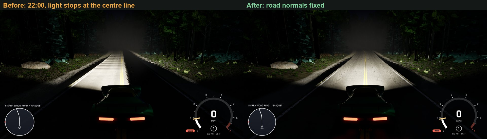
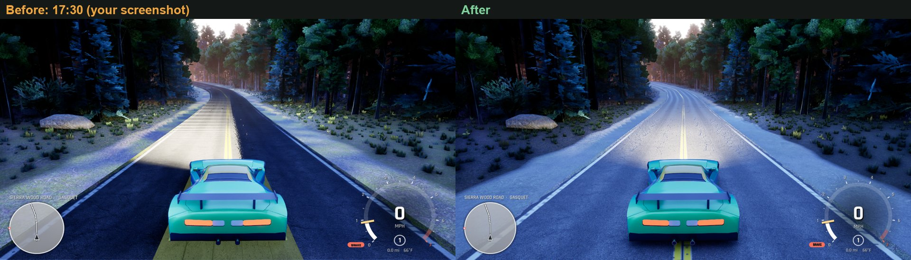
Cause: the road, bridge, embankment, parking and water meshes never set up a normal overlay. Every vertex rendered with normal (0,1,0), pointing sideways along world +Y. The GBuffer WorldNormal view confirmed it: road (0,1,0), terrain (0,0,1). Headlights lit only road whose +Y side faced the lamp, a cut along the lamp plane that looked like the centre line. Daytime road shading also followed sun azimuth instead of elevation. The headlights themselves (IES, shadows, beam haze) and the road material were fine.
Fix (30479e2): one FMeshNormals::InitializeOverlayToPerVertexNormals call in each of the five builders, the same call terrain, walls and guardrails already make.
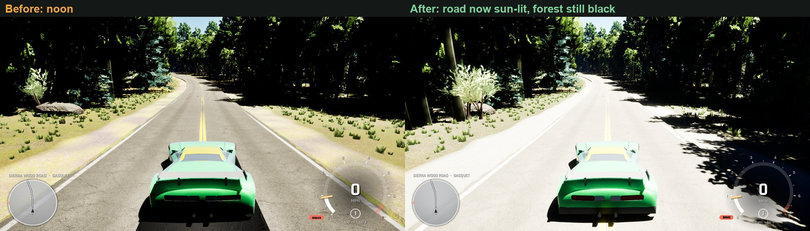
With correct normals the road faces the sun and is lit 2–3× brighter. Road albedo is about 0.12 linear, which is right for worn asphalt, so the material is fine. The frame is still too contrasty, though: the sunlit road clips and the forest shade stays black. Overcast shows the same: at 150 s the log reads sun 3005 (4 % of base) and sky light ×30, yet black pixels barely move (0.48 → 0.47). Raising the sky light doesn't reach the canopy shade, so it looks like sky occlusion, not exposure. That makes Gap 1C the next step: check how much sky the forest floor sees and the tree cards in Lumen, before any more exposure tuning.
| Look | mean b → a (ref) | p50 b → a (ref) | DR stops b → a (ref) | sat b → a (ref) | black share b → a |
|---|---|---|---|---|---|
| Gasquet noon | 141 → 150 (109) | 44 → 9 (61) | 16.4 → 16.6 (8.8) | .22 → .35 (.40) | .48 → .51 |
| Gasquet 08:00 | 123 → 125 (82) | 12 → 30 (48) | 16.6 → 16.6 (10.5) | .41 → .43 (.67) | .49 → .37 |
| Gasquet 17:30 | 95 → 93 (189) | 41 → 42 (192) | 16.5 → 16.2 (9.0) | .54 → .61 (.34) | .35 → .35 |
| Gasquet overcast | 133 → 132 (139) | 40 → 35 (137) | 16.3 → 16.3 (5.8) | .22 → .39 (.16) | .48 → .47 |
| Gasquet rain | 129 → 106 (144) | 74 → 62 (103) | 16.3 → 16.2 (7.6) | .35 → .44 (.25) | .39 → .34 |
| Deals Gap noon | 106 → 107 (127) | 36 → 35 (109) | 16.0 → 16.0 (7.5) | .50 → .52 (.36) | .42 → .38 |
| Deals Gap 17:30 | 95 → 93 (189) | 52 → 47 (192) | 16.5 → 13.8 (9.0) | .33 → .32 (.34) | .14 → .17 |
| SF noon | 116 → 127 (148) | 109 → 124 (112) | 9.3 → 11.5 (9.7) | .28 → .24 (.22) | .02 → .06 |
| SF 17:30 | 95 → 73 (127) | 60 → 54 (108) | 9.1 → 9.5 (11.6) | .29 → .29 (.38) | .03 → .02 |
| Summit noon | 105 → 115 (147) | 102 → 115 (150) | 15.7 → 10.1 (6.9) | .44 → .39 (.55) | .16 → .12 |
Open terrain improved: Summit and SF noon moved toward the photos. Forest scenes didn't: Gasquet and Deals Gap still sit at ~16 stops against 8–10, and SF 17:30 got darker (mean 95 → 73) with exposure −1. The after shots ran at 1536×816 (the saved resolution changed between runs); Deals Gap noon ran at 1280×720. The first noon attempt crashed out of system RAM (WSL held 10 GB) and was re-shot.
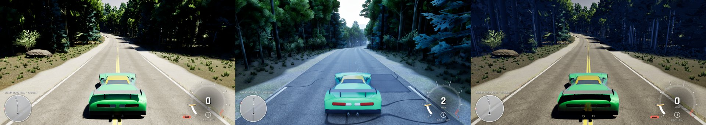
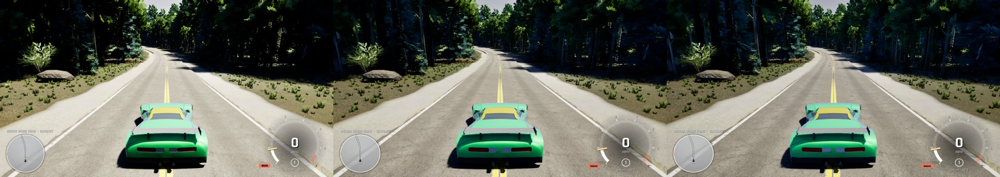
od.SkyLeak 0 · 0.3 · 0.6| Black share | no leak | 0.1 | 0.3 | 0.6 | Lumen GI off |
|---|---|---|---|---|---|
| Gasquet overcast | .37 | .28 | .19 | .13 | .002 |
| Deals Gap noon | .19 | .17 | .14 | .11 | – |
| Gasquet noon | .43 | .45 | .44 | .42 | .26 |
Default set to 0.6. It costs no GPU time; it's a constant term in Lumen's gather. Tune it live with od.SkyLeak. Gasquet noon doesn't respond: even with the sky fully unblocked it stays 26 % black. Here the sun-to-shade ratio is the limit. The open, sunlit road sets the exposure, and the trees stand back from it in their own shade (Howland Hill Rd has canopy over the road). Local shadow contrast is already 0.5. Next options: more bounce light under the trees (a brighter forest floor, foliage transmission per Gap 1B), or canopy closer over the road in the Gasquet forest layout.
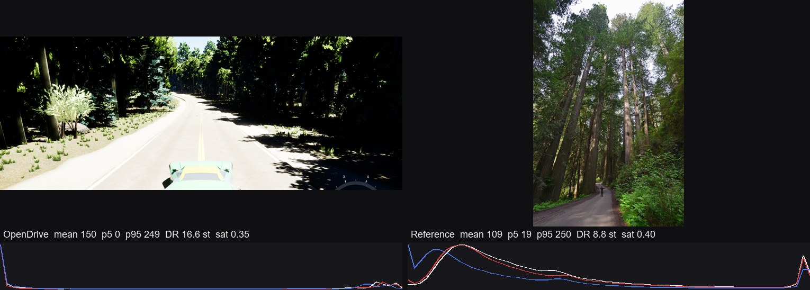
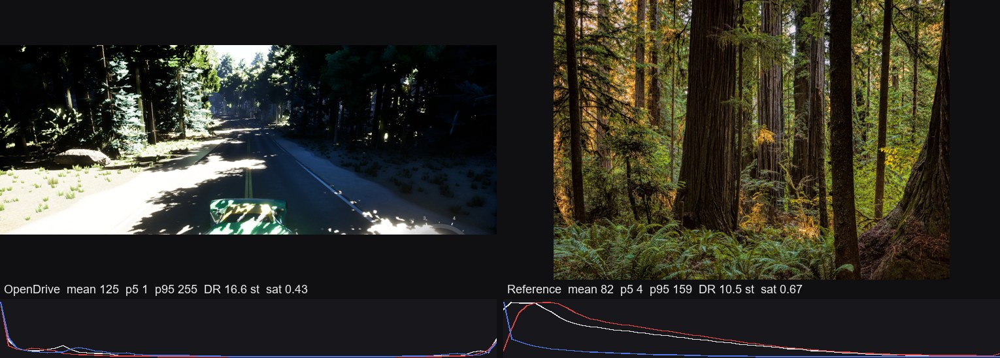
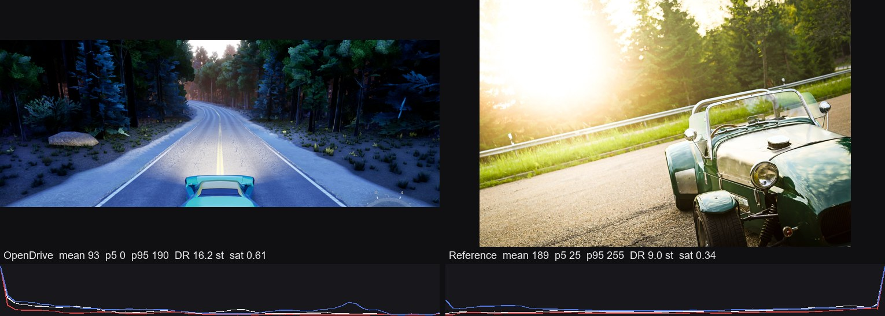
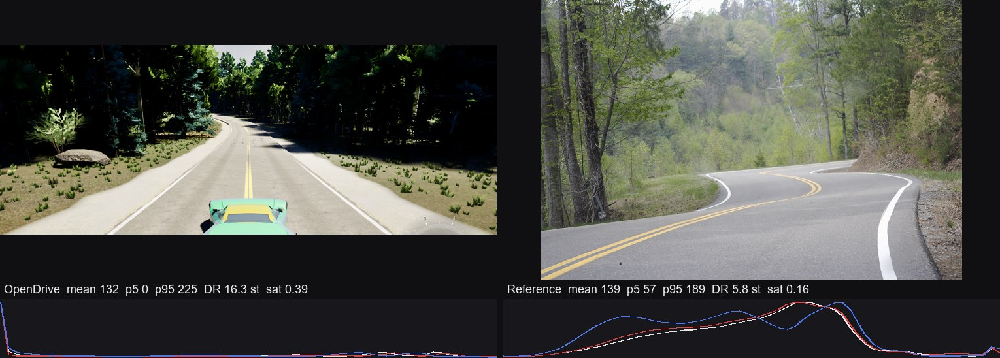
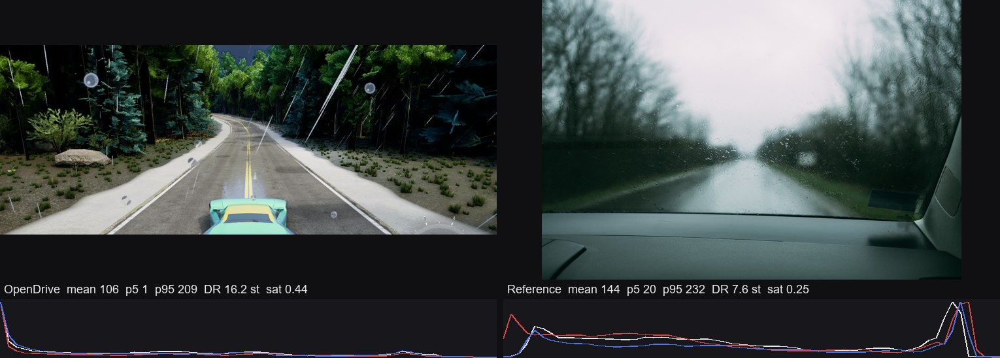
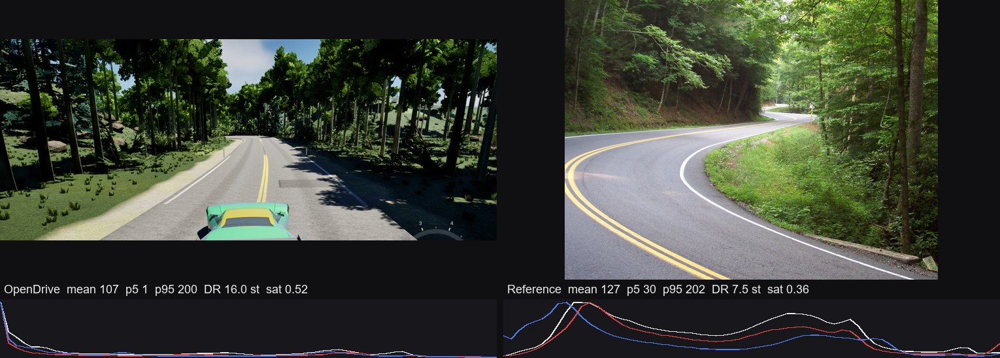
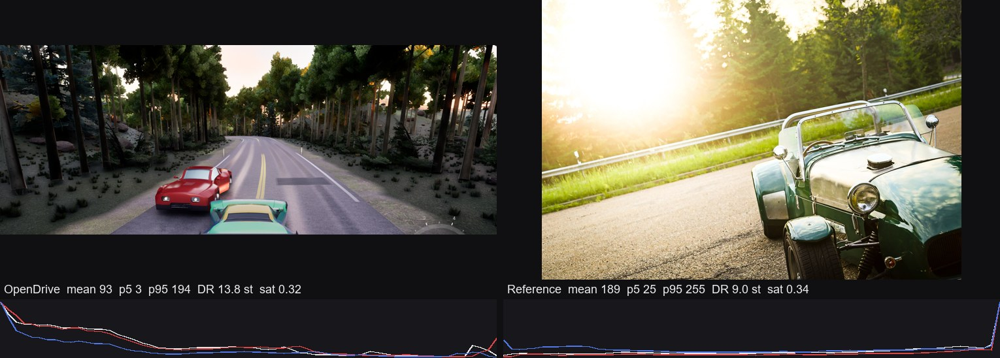
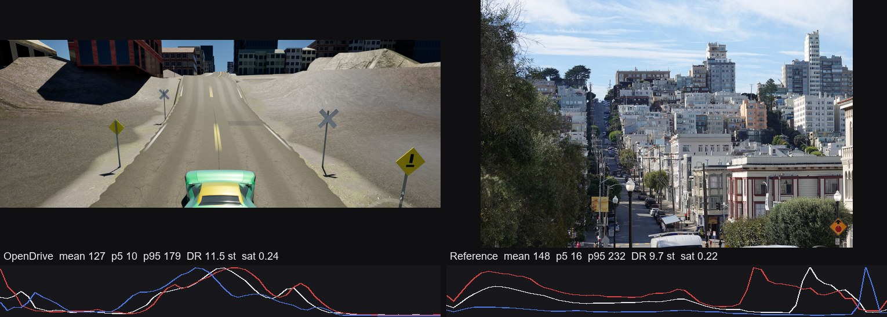
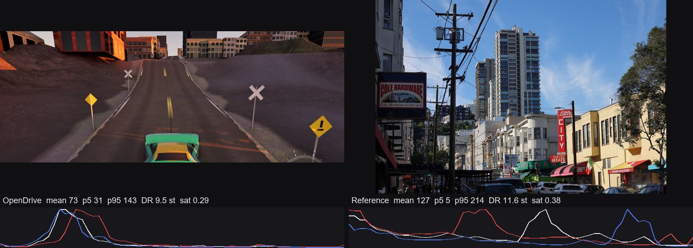
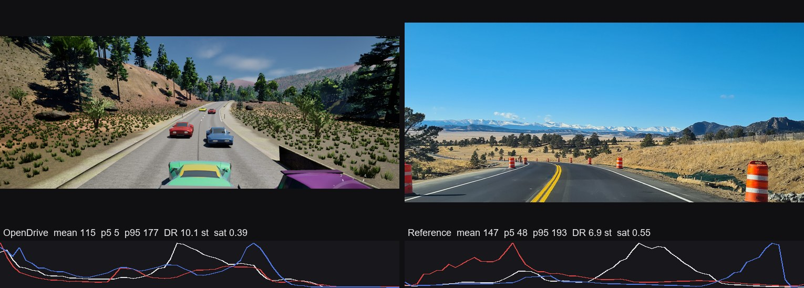
Each shot used the real -game path on the GPU (no -nullrhi, no offscreen). The run used the main checkout at fdc7f2c with the normal launch scalability, and ODPerf confirmed the same on every shot: 1280x720 sp 100 sg 3 style 1. Lumen, VSM, the _real materials, forest, buildings and traffic were all on.
Season was pinned with -odseason=summer to match summer photos (the saved season is Winter). Hour was set with -odhour, weather with od.Weather, and driving started with -odgo=8.
A shot only counts if the loading gate released normally (LOADSCREEN released, not the failsafe) before the screenshot. The screenshot came 40–450 s after release. Every driving shot (12 looks + 8 diagnostics) passes. The garage shot is the boot menu, which has no gate.
Console weather (od.Weather) blends in over 90 s and wetness builds over ~400 s, so overcast and rain were re-shot at 150 s and 480 s. A player who picks Rain in the menu gets it instantly. Tooling: tools/lighting_capture/ (capture.ps1, batch.ps1, followup.ps1, diag.ps1, measure.py). The two ShowFlag diagnostics are diag.ps1 round3.
Metrics are computed on the top 72 % of the frame (HUD cropped): mean / p5 / p95 = sRGB luminance 0–255 · DR = log2(p99/p1) of linear luminance · sat = mean HSV saturation · black = share of pixels ≤5 in all channels.
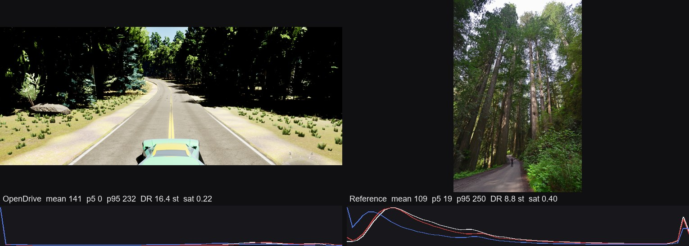
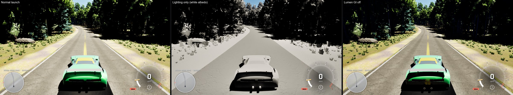
Pixels ≤5/255 in every channel: Gasquet noon 46 %, Gasquet 08:00 34 %, Deals Gap noon 26 %, Summit 16 %. The references score 0–1 %: Howland Hill 0 %, Tail of the Dragon 0 %, redwood morning light 1 %. San Francisco has no trees, and there the game's DR (9.3 stops) matches the reference (9.7). So the tonemapper and exposure are fine in the open. The failure is specific to canopy shade.
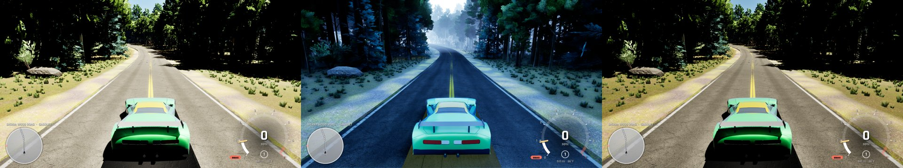
ShowFlag.DirectLighting 0. Auto-exposure lifts the frame, and the forest is fully lit by sky and bounce light. Right: ShowFlag.SkyLighting 0, which looks almost identical to normal.Cause (measured). Six diagnostics ruled out Lumen. The forest stayed black with Lumen GI off, with hit lighting, with short-range AO off and with screen traces off. The direct-light-off shot shows the fill light is there. It is just far too weak next to the 75 000 lux sun (build_openworld_test_level.py:435, sky light at default intensity 1). Auto-exposure meters on the sunlit road and the AutoExposureBias −1 in the priority-100 code volume (ODAtmosphereController.cpp:448), so the shade lands 14+ stops down, in the crushed toe. A real camera or eye sees about 3–4 stops between sun and canopy shade. Several things make that gap larger here than in reality. The trees are left out of Lumen (ODForestManager.cpp:2165/2397 SetAffectDynamicIndirectLighting(false)), so there is no green bounce off the canopy. The foliage SSS is dim (0.10, 0.28, 0.08), so leaves don't glow when backlit. And there is no local exposure. (The local-exposure diagnostic used a wrong cvar name and is void.)
| Option | Visual gain | GPU | Effort | Licence |
|---|---|---|---|---|
A. Local exposure in the code grade volume: LocalExposureShadowContrastScale ~0.6–0.75 and LocalExposureHighlightContrastScale ~0.8. This is how a real camera's HDR compresses sun and shade. Tune it against the Howland Hill pair: p5 should go from 0 to about 15–20. | Large: shade opens up and the open scenes keep their contrast | ~0.2–0.4 ms | XS: two PP fields + rerun | n/a |
B. Restore the missing light paths. Put tree HISMs back into Lumen (keep low-veg off) and raise the foliage MP_SUBSURFACE_COLOR in build_flora_materials.py roughly 2–3×. The result is green and warm fill under the canopy, which is also Gap 3's fix. | Large: the redwood colour, not just brightness | +0.5–1.5 ms est. (surface cache) | S | n/a |
| C. Rebalance the ratio: sky light intensity ~1.5–2, or drop the −1 EV bias now that the ground-bleach bug it covered is fixed. This lifts every shadow, not just forest. | Medium; risks flattening open scenes | 0 | XS | n/a |
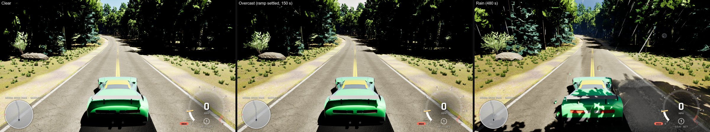
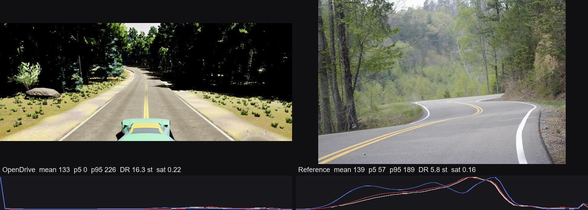
Why, in ODAtmosphereController.cpp:54-57, 564-611: at full cover the sun is scaled by OvercastSun = 0.25. That is only 2 stops, and auto-exposure (speed 3 up) gives it straight back. Meanwhile sky light is also reduced (×0.6), and FullCloudCoverage = 0.5 never closes the volumetric cloud deck. Under a real overcast, direct sun is roughly 0 and the bright sky dome provides nearly all the light.
| Option | Visual gain | GPU | Effort | Licence |
|---|---|---|---|---|
A. Retune the four constants: sun ×0.02–0.05 at full cover, sky light ×1.0–1.3 (not 0.6), FullCloudCoverage ~0.9–1.0, sky luminance ~×0.6. Exposure then settles on the dome. | Large: shadowless grey days and rain that reads as rain | 0 | S | n/a |
B. Widen the sun's LightSourceAngle with cloud (0.5° → 5–10°) for broken-cloud days, so the shadows that remain go soft. | Medium | ≈0 (VSM) | XS | n/a |
C. Turn on volumetric-cloud shadows on the sun (bCastCloudShadows) so the sun dims where the deck actually is. | Medium: moving cloud shade | +0.2–0.5 ms | S | n/a |
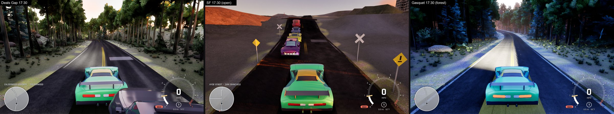
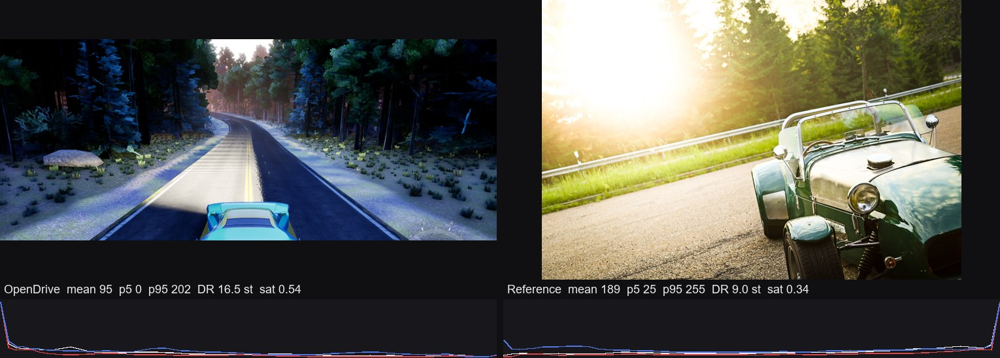
The low sun is blocked by the canopy, so only the blue sky light reaches the road, and exposure lifts it. In a real forest at golden hour, warm light bounces and transmits through the sunlit canopy tops. That is the same missing path as Gap 1.
| Option | Visual gain | GPU | Effort | Licence |
|---|---|---|---|---|
| A. Fix Gap 1 option A or B first. Warm bounce from the canopy is the real-world mechanism. | Large | see Gap 1 | S | n/a |
B. Drive the code grade volume's white balance from sun elevation (e.g. WhiteTemp 6500 → 5600 K below 15°), so the camera is balanced for the warm sun and not the blue shade. | Medium, every scene | 0 | S | n/a |
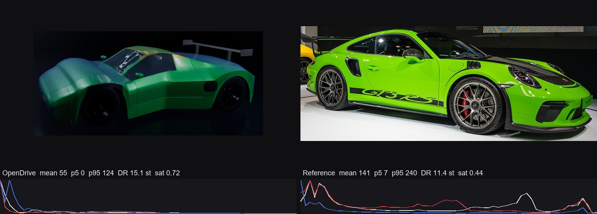
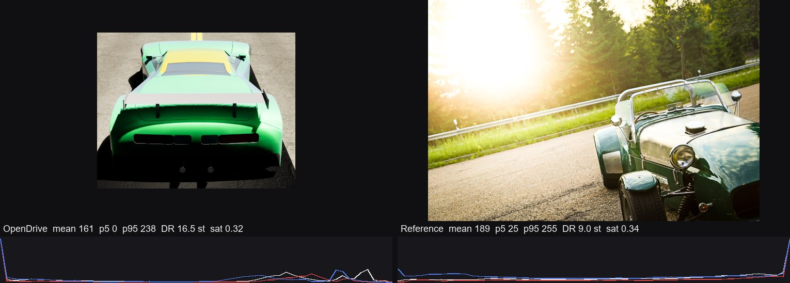
The body is MSM_CLEAR_COAT (base metallic 0.6, roughness 0.38, coat roughness 0.035, legacy clear coat since fffd577), with Substrate=True in DefaultEngine.ini. Lumen reflections plainly work on the garage floor. So the missing coat reflection points at the clear-coat path under Substrate, or at the car mesh not reaching the reflection pass. This needs one diagnostic pair before a change: viewmode reflections, and r.Lumen.Reflections.Allow 0 against 1, in the garage.
| Option | Visual gain | GPU | Effort | Licence |
|---|---|---|---|---|
A. Run the diagnostic pair, then put the coat on Substrate's native Slab coat (Haziness/second specular lobe) or confirm the legacy coat's top lobe is the one Lumen traces. | Large: the hero object reads real | ≈0 | S–M | n/a |
| B. Base layer tune: metallic 0.6 → 0.2–0.35 for solid colours (real solid paint is a dielectric) and roughness 0.38 → 0.3, plus a procedural flake normal for metallic colours. | Medium: deeper, saturated colour | 0 | S | n/a (procedural) |
C. Chrome tips and glass: chrome needs a reflection to show (same root cause as A). The windscreen in the garage shows a white crackle artifact worth one look in build_car_materials_real.py. | Small | 0 | S | n/a |
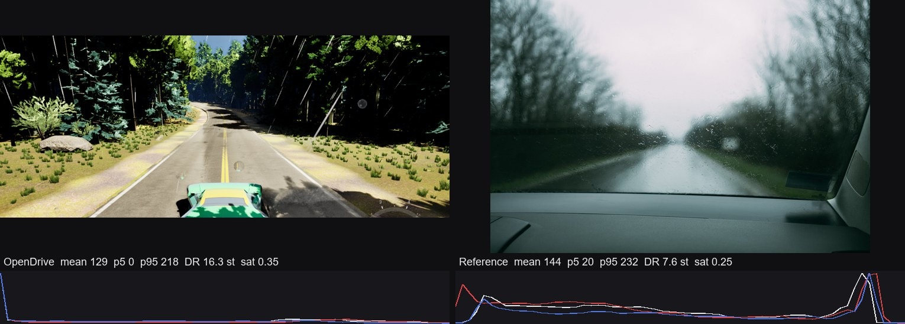
Wetness should be ~1 by 400 s (WetUpSeconds 180 ÷ precip 0.45), and the road material has WetDarken 0.55 and WetRoughness 0.12. The sheen would show even under this blue sky. So first confirm that Wetness actually reaches the road MID (print od.Weather, then inspect the road material parameter).
| Option | Visual gain | GPU | Effort | Licence |
|---|---|---|---|---|
| A. Verify the wetness → road parameter path and fix if broken. Fixing Gap 2 also removes the blue sky the road would reflect. | Large in rain | 0 | S | n/a |
| B. Once wet, rely on Lumen reflections at roughness 0.12 (already paid for). Optionally add a procedural ripple normal on puddles. | Medium | 0–0.2 ms | S | n/a |
M_CarContactShadow fails on SM6 with Not enough components in (Local5.rgb: float3) for component mask 0001. The cause is mask(dcol, "a") on an RGB output in unreal/build_car_contact_shadow_material.py:63-79. The fix: read the texture sample's named A pin instead, as apply_road_material.py:551-558 already does. The five decals per car (ODContactShadow.cpp) then ground the car where VSM resolution runs out at distance. No capsule shadows exist.
| Option | Visual gain | GPU | Effort | Licence |
|---|---|---|---|---|
| A. The pin fix above, then rebuild the material via the script. | Medium: cars stop floating at distance and in shade | ~0.05 ms (5 decals × cars) | XS | n/a |
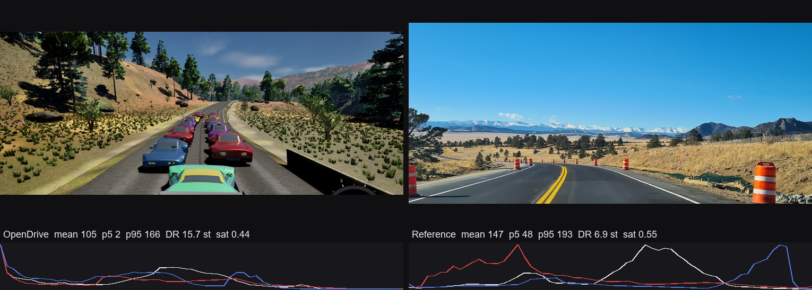
Across the eight matched daytime pairs the game frame averages 20–40 levels darker than the photo. Both grade volumes apply exposure bias −1. At 2,900 m the sky should be a deep saturated blue; the game's zenith is a greyed mid-blue, about ⅔ stop dark. SF noon (77,115,156) is similarly muted. Contrast 1.12 and saturation 0.98 in the priority-100 code volume flatten it further. The level's 1.22 saturation never applies, because the priority-100 volume wins.
| Option | Visual gain | GPU | Effort | Licence |
|---|---|---|---|---|
A. Exposure bias −1 → −0.5 in the code volume (ODAtmosphereController.cpp ~392-477), checked against SF and Summit. | Medium | 0 | XS | n/a |
| B. SkyAtmosphere: lower Mie scattering (0.009 → ~0.004) at high-altitude areas, or make it per-area from climate json, for a deeper zenith. | Medium in mountains | 0 | S | n/a |
ODPerf GPU ms @1280x720 sg3: Gasquet noon 25.1 · 08:00 30.6 · 17:30 31.7 · overcast 26.0 · rain 29–35 · Deals Gap noon 26.4 · 17:30 38.3 · SF/Summit similar.
Clean baseline (Ollama stopped, 0 of 8151 MiB VRAM in use before launch): a Gasquet noon clear re-run settles at GPU 24.7 ms, frame 25.8 ms, game 6.2 ms, 851 draws, 0.49 M tris. The Ollama-loaded run measured 24.8 ms, so the VRAM contention made no measurable difference and the other numbers below stand. At 1280×720 the scene is already ~3 ms over the 22 ms budget. Low sun costs +6–12 ms over noon (volumetric fog/cloud at grazing angles is the first suspect).
Rain game-thread build-up (not lighting; flagged to the weather owner): with Rain held, the game thread climbs roughly linearly, from 8 ms to 60 ms (1.5 min) to 100 ms (3.5 min) to 140–190 ms (8 min), ending at 4–7 fps. Clear and overcast stay at 8 ms. Log: out/cap_gasquet_h12_rain_settled.log.
sf_h12_clear.png.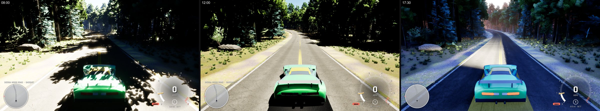
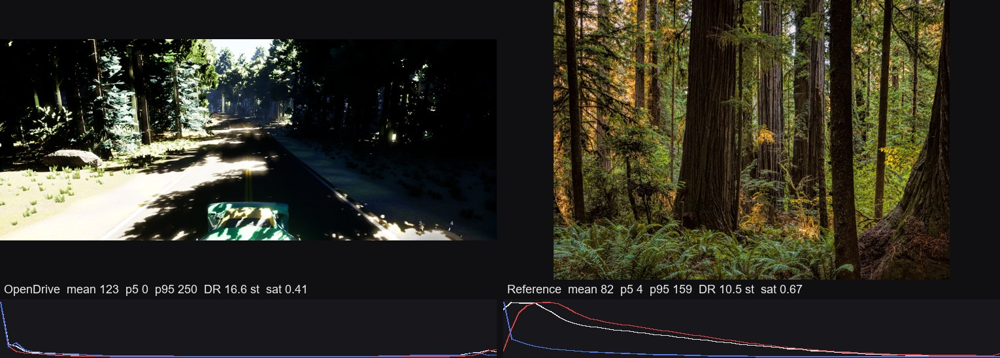
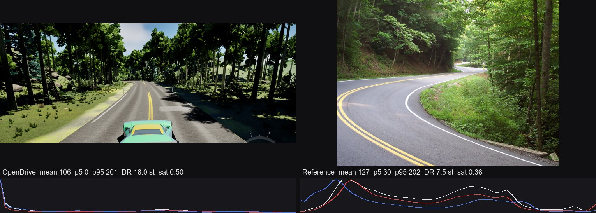
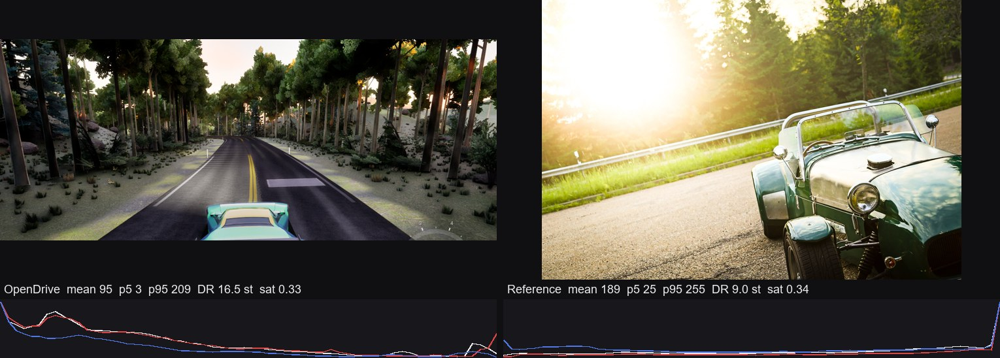
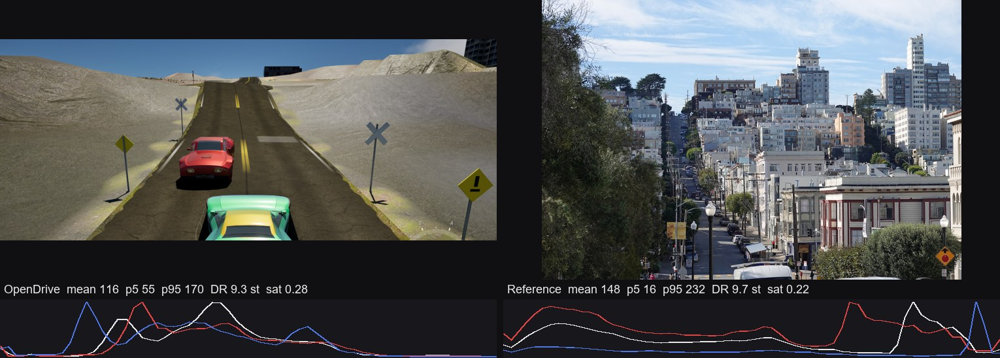
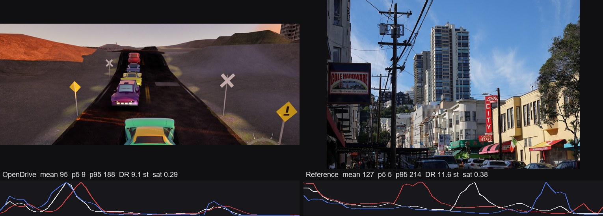
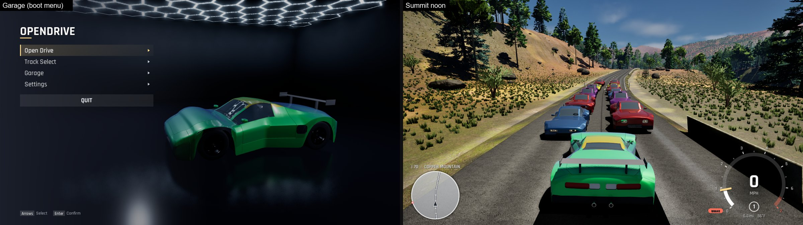
| Photo | Author | Licence |
|---|---|---|
| Visitor on Howland Hill Road | NPS | Public domain |
| Early morning light | Sheila Sund | CC BY 2.0 |
| Sunset on the black forest high road | Carsten Frenzl | CC BY 2.0 |
| Tail of the Dragon 2 | William Klos | CC BY 2.0 |
| TailOfTheDragon.jpg | (see page) | CC BY 2.5 |
| Driving on a rainy day… | Shixart1985 | CC BY 2.0 |
| Filbert Street towards Russian Hill | Ilkka Simomaa | CC BY 4.0 |
| View up Vallejo Street | Ilkka Simomaa | CC BY 4.0 |
| East of Breckenridge, Colorado | 좀비 브렌다 | CC BY-SA 4.0 |
| GT3 RS and Carrera T, NYIAS | Nan Palmero | CC BY 2.0 |
| Newfound Gap Road (also gathered) | Phil Varney | Public domain |
Side-by-side sheets crop and resize the photos; no other changes. The CC BY-SA photo is shown under its own licence.
.jpg){kind=link}
.jpg){kind=link}
.jpg){kind=link}


.jpg){kind=link}